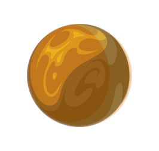
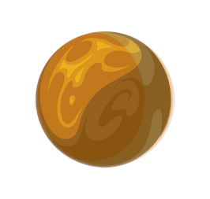

The 2nd Planet from the Sun
Interesting facts about the composition and minerals of the planet.
Basalt on Venus
Basalt is an igneous rock formed from the rapid cooling of surface magnesium-rich and iron-rich lava. Basaltic rocks exhibit a wide range of shading due to regional geochemical processes. Basalt has a fine-grained mineral texture due to the molten rock cooling too quickly for large mineral crystals to grow.
Venus
Venus has the longest rotation period of any planet in the Solar System and rotates in the opposite direction to most other planets. It does not have any natural satellites. It is named after the Roman goddess of love and beauty.Venus's atmosphere consists mainly of carbon dioxide with clouds of sulfuric acid, and scientists have only detected trace amounts of water in the atmosphere. The atmosphere is heavier than that of any other planet, leading to a surface pressure 90 times that of Earth. Venus is a terrestrial planet and is sometimes called Earth's "sister planet" because of their similar size, mass, proximity to the Sun, and bulk composition. Venus has 167 large volcanoes that are over 100 km across. No craters on Venus are smaller than 3 km, because of the effects of the dense atmosphere on incoming objects.
 
